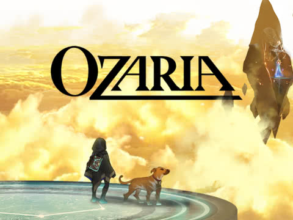
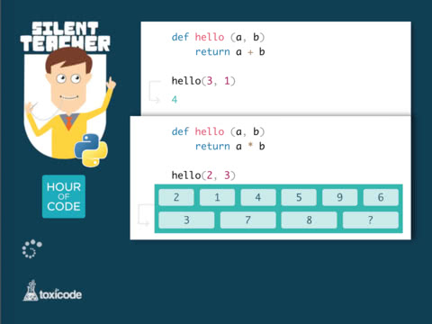
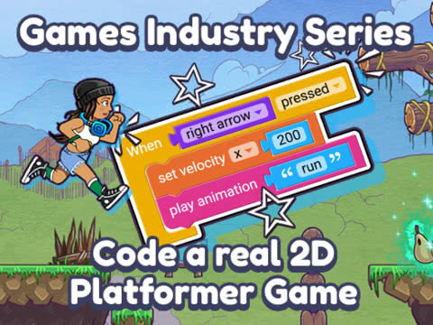

NOV 24, 2020
Palm Beach Atlantic Green Complex
4PM
This event is called Call of Code. At this event people are invited and welcomed to join in
learning coding from specialists who work specifically in these areas.
We have languages from assembly language to the well know python.
DEC 13, 2020
Palm Beach Atlantic Computer Lab
10AM
This event is for experienced coders. This is a challenge for people who are familiar
with coding and wanting to show off their efficient and ability to adapt and code. At this event
we will be testing your ability to take a problem and solve it efficiently and in a timely manner
through your code. This speedcode event will have a $1500 payout for the winner.
Jan 16, 2021
Palm Beach Atlantic Computer Lab
11AM
This event is for experienced coders. This is a challenge for people who are familiar
with coding and wanting to show off their ability to compute at a high level and
show off coding for control over AI. In this competition you will code a Arm to pour water into a cup.
The winner of this event will be able to spend a day with NASA technology center and see what its like
as a NASA developer.

OZARIA
PLAY NOW
This is a game called Ozaria, your journey begins where you create your character and learn the fundamentals of
coding. This game will give you a basic understanding of how coding is done. This game does not have a specific language, but is
to demonstate the basics of coding. You will control your character through code to create a legend. I think that this is a good game because
you will learn and understand concepts such as sequences, loops, debugging, and decomposition.
In the end, you'll design a playable game that you can share with your friends!

Discover Python with Silent Teacher
PLAY NOW
Discover the basics of Python without any word or explanation.
Our silent teacher will give you several series of challenges that will lead you to guess
some rules and learn from your own mistakes. This game will be helpful because through the game
you will be able to learn and apply python through challengesa and you can learn from your own mistakes as well.

Games Industry Activity: Code a Platformer game
PLAY NOW
Learn to code a real game like Super Mario Bros. Students that are ready
to go beyond Scratch and Tynker will be introduced to real games industry practice,
creative coding concepts, how to publish their own unique game and start working towards a
career in the games industry. The tutorial is all about level design, choosing a character,
animating and coding your character to move around. This game will help you learn to do more advance coding to
create a game and through this you will be able to code effecively through Coding a platformer game.